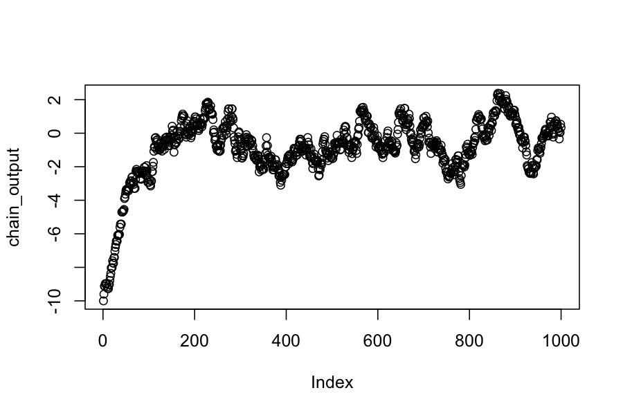
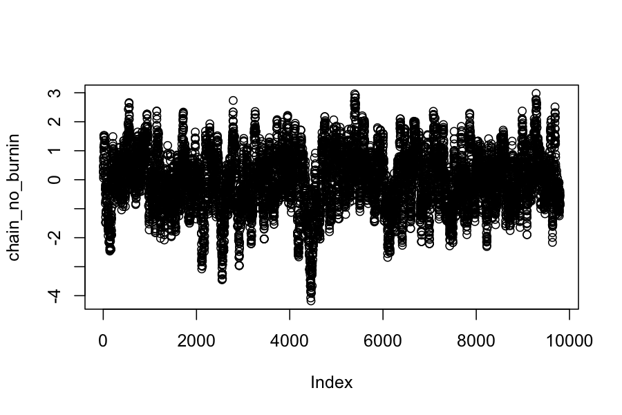
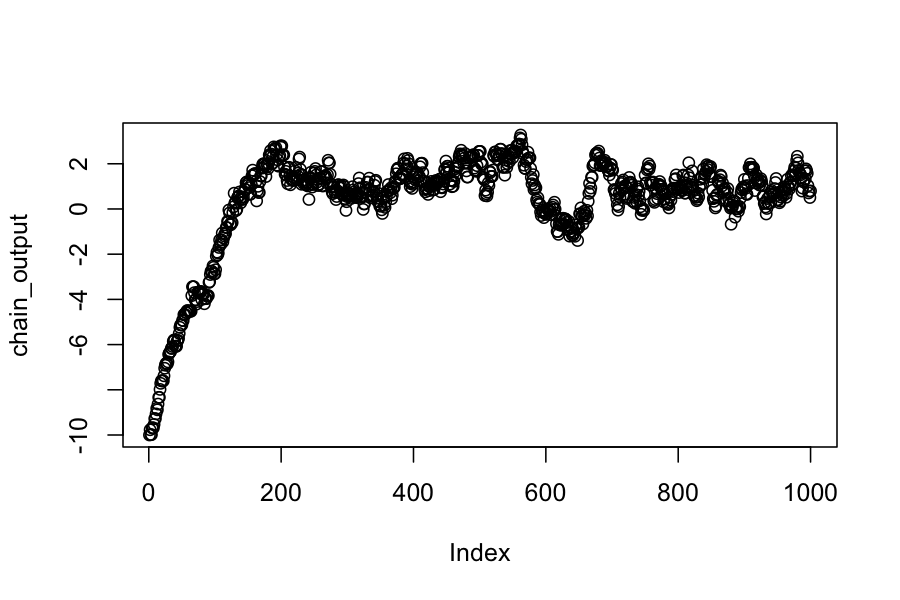
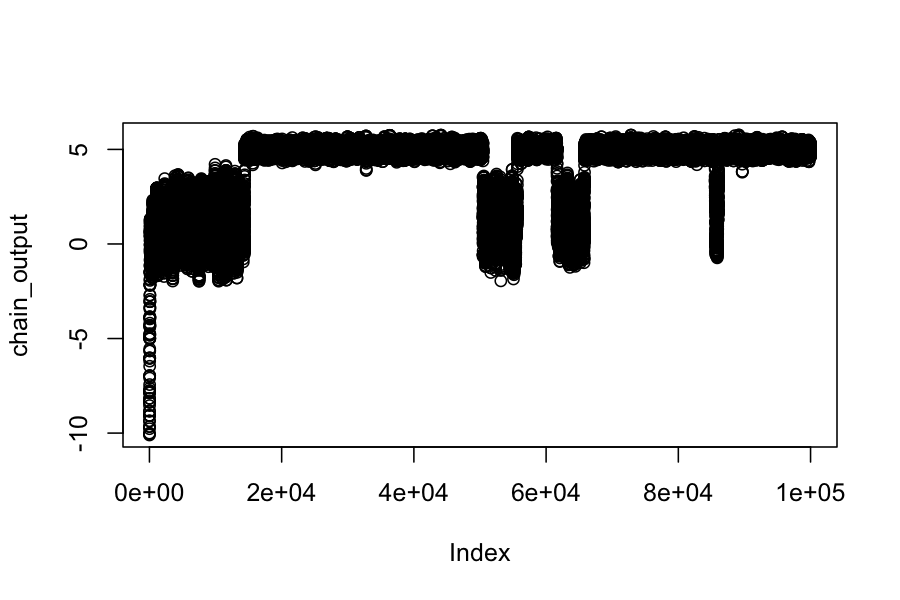
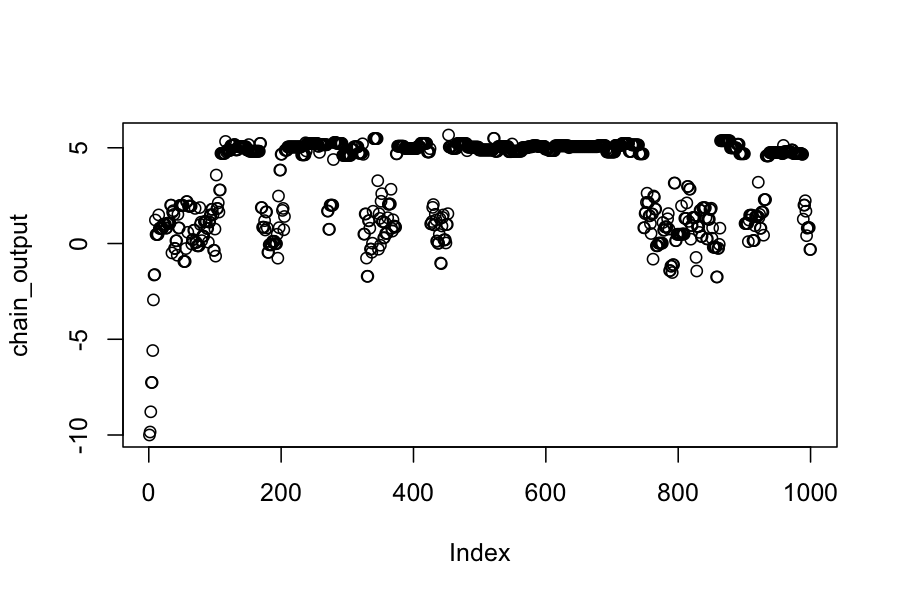

Metropolis Hastings
Today: Metropolis Hastings
Reading:
Our goals
Sample from any probability distribution \(\pi\).
Compute expected value of functions of random variables drawn from these distributions, \(E_{X \sim \pi}(f(X))\)
Last time we saw that if a Markov chain has a stationary distribution \(\pi\), we can estimate \(E_{X \sim \pi}(f(X))\) as \(\frac{1}{n} f(X_i)\), where \(X_1,X_2, \ldots, X_n\) are drawn from the Markov chain.
Metropolis-Hastings will let us specify a stationary distribution \(\pi\) and build a Markov chain having \(\pi\) as its stationary distribution.
Metropolis-Hastings: The Idea
Start off with a Markov chain that has the wrong stationary distribution, e.g., a random walk
Modify the chain so that it spends more time in regions of high probability under the target distribution.
Metropolis-Hastings: Algorithm
Given:
Pick a starting value for the chain \(X_0\).
For \(i = 1, \ldots, n\):
Pick a proposed move from \(Y \sim q(i \mid X_{i-1})\)
Compute the acceptance probability: \[
a = \text{min} \left \{ \frac{\pi(Y) q(X_{i-1} \mid Y)}{\pi(X_{i-1}) q(Y \mid X_{i-1})} \right\}
\]
Let \(X_i\) be \[
X_i = \begin{cases}
Y & \text{w.p. } a \\
X_{i-1} & \text{w.p. }1 - a
\end{cases}
\]
Simple Example: Normal Distribution
Proposal distribution: \(q(x \mid y) = N(y, .3)\)
Target distribution: \(\pi(x) = N(0,1)\)
Start at \(X_0 = -10\)
- Notice that \(q\) is symmetric, and so the acceptance probability for moving from \(X\) to \(Y\) is \(\pi(Y) / \pi(X)\)
sample_with_symmetric_proposal =
function(proposal_function, target_distribution, current_state) {
proposal = proposal_function(current_state)
acceptance_probability = target_distribution(proposal) / target_distribution(current_state)
if(runif(1) <= acceptance_probability) {
return(proposal)
} else {
return(current_state)
}
}
## The proposal distribution is normal, centered at the current state, standard deviation .3
proposal_function = function(x) rnorm(n = 1, mean = x, sd = .3)
## The target distribution is N(0,1)
target_distribution = dnorm
## check the sampling:
sample_with_symmetric_proposal(proposal_function, target_distribution, -10)
## [1] -10
n_samples = 1000
chain_output = numeric(n_samples)
chain_output[1] = -10
for(i in 2:n_samples) {
chain_output[i] = sample_with_symmetric_proposal(proposal_function, target_distribution, chain_output[i-1])
}
plot(chain_output)

mean(chain_output)
## [1] -0.9162604
sd(chain_output)
## [1] 1.871455
Notice:
We see that before about 200 steps, the chain has not converged to its stationary distribution.
Even after it has converged, the elements in the chain are not independent.
Let's run the chain longer and discard the first 200 steps as "burn-in"
n_samples = 10000
chain_output = numeric(n_samples)
chain_output[1] = -10
for(i in 2:n_samples) {
chain_output[i] = sample_with_symmetric_proposal(proposal_function, target_distribution, chain_output[i-1])
}
chain_no_burnin = chain_output[201:n_samples]
plot(chain_no_burnin)

mean(chain_no_burnin)
## [1] -0.03140313
sd(chain_no_burnin)
## [1] 1.019056
Note:
This chain looks like it has reached its stationary distribution, and we can confirm that by checking that the sample expected values match what they should be for a \(N(0,1)\) distribution.
The ergodic theorem doesn't require that we discard the burn-in period, but people often do anyway.
Example 2: Mixture distributions
Proposal distribution: \(q(x \mid y) = N(y, .3)\)
Target distribution: Let \(\phi_{\mu, \sigma}(x)\) be the pdf for a \(N(\mu, \sigma)\) random variable. Our target distribution is \(\pi(x) = .25 \phi_{1, 1}(x) + .75 \phi_{5,.2}(x)\).
Start at \(X_0 = -10\)
## The proposal distribution is normal, centered at the current state, standard deviation .3
proposal_function = function(x) rnorm(n = 1, mean = x, sd = .3)
## The target distribution is N(0,1)
target_distribution = function(x) .25 * dnorm(x, mean = 1, sd = 1) + .75 * dnorm(x, mean = 5, sd = .2)
n_samples = 1000
chain_output = numeric(n_samples)
chain_output[1] = -10
for(i in 2:n_samples) {
chain_output[i] = sample_with_symmetric_proposal(proposal_function, target_distribution, chain_output[i-1])
}
plot(chain_output)

mean(chain_output)
## [1] 0.3720607
sd(chain_output)
## [1] 2.266502
Let's try running the chain a lot longer:
n_samples = 100000
chain_output = numeric(n_samples)
chain_output[1] = -10
for(i in 2:n_samples) {
chain_output[i] = sample_with_symmetric_proposal(proposal_function, target_distribution, chain_output[i-1])
}
plot(chain_output)

mean(chain_output)
## [1] 4.042973
sd(chain_output)
## [1] 1.780207
What's happening?
Another way to fix this: change the proposal distribution.
proposal_function = function(x) rnorm(n = 1, mean = x, sd = 2)
n_samples = 1000
chain_output = numeric(n_samples)
chain_output[1] = -10
for(i in 2:n_samples) {
chain_output[i] = sample_with_symmetric_proposal(proposal_function, target_distribution, chain_output[i-1])
}
plot(chain_output)

mean(chain_output)
## [1] 3.376655
sd(chain_output)
## [1] 2.2654
Why not always have a really diffuse proposal distribution?
Tradeoff between exploring the space well and proposing high probability moves.
With a diffuse proposal distribution, many of the proposals are to low-probability areas, and the chain stays in the same place a lot.
Plot below shows how far the chain moved on each step when we used the diffuse proposal distribution:
plot(diff(chain_output))
Overall:
Choosing the proposal distribution involves balancing between moving long distances and having a high proportion of the moves accepted.
This will be problem-specific, and you often have to experiment with different proposal distributions.
There are more formal diagnostics for assessing convergence, but you should really look at the plots of the parameters.
You can never be sure that your chain isn't completely missing part of the space.
Summing up
Metropolis Hastings is a simple, general-purpose method for creating a Markov chain with a specified stationary distribution. It is particularly useful when:
You only know the target distribution up to a constant of proportionality.
All the regions of high density in the target distribution are connected to each other.
The target distribution is high dimensional.
You should be scared because:
You can never be sure that your chain has explored the space adequately
There is theory on convergence times, but they tend to say you have to run your chain past the heat death of the universe.